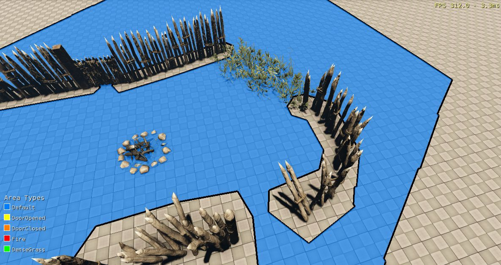
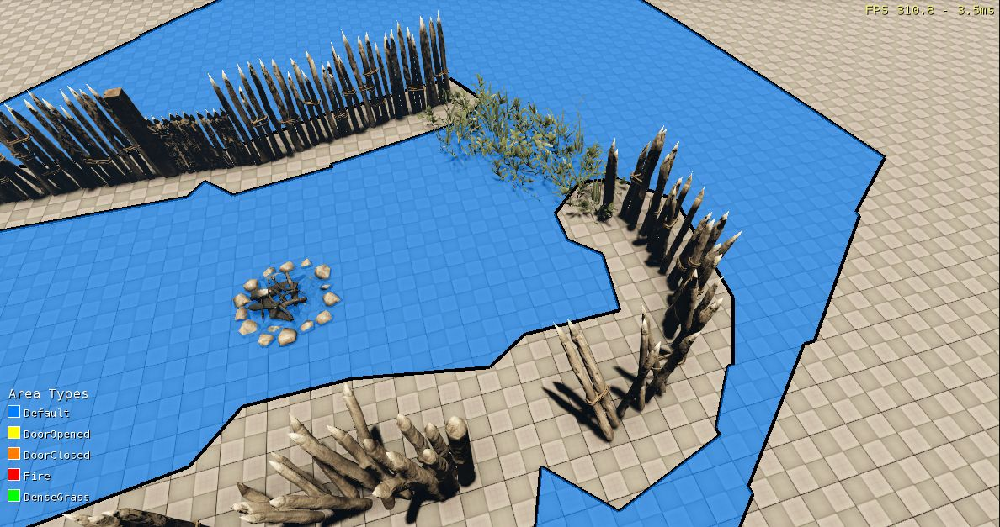
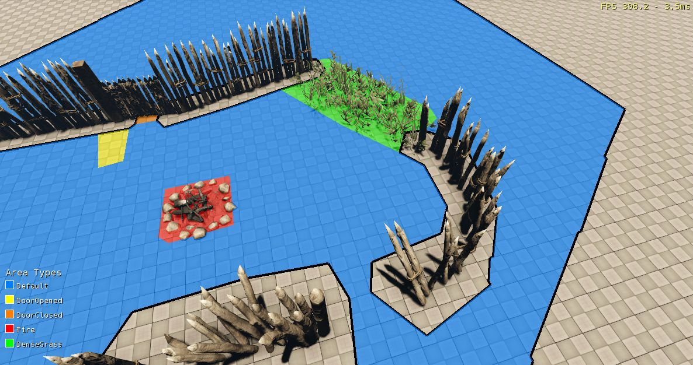
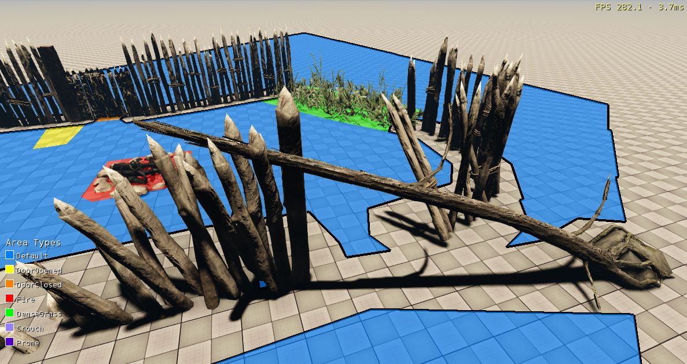
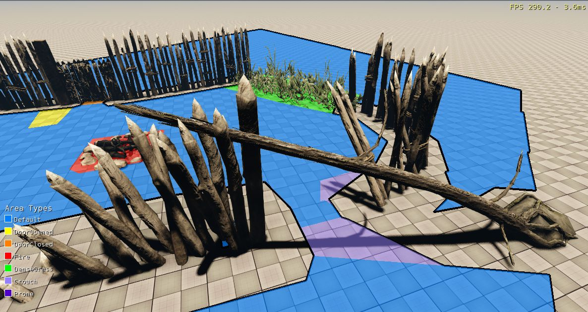
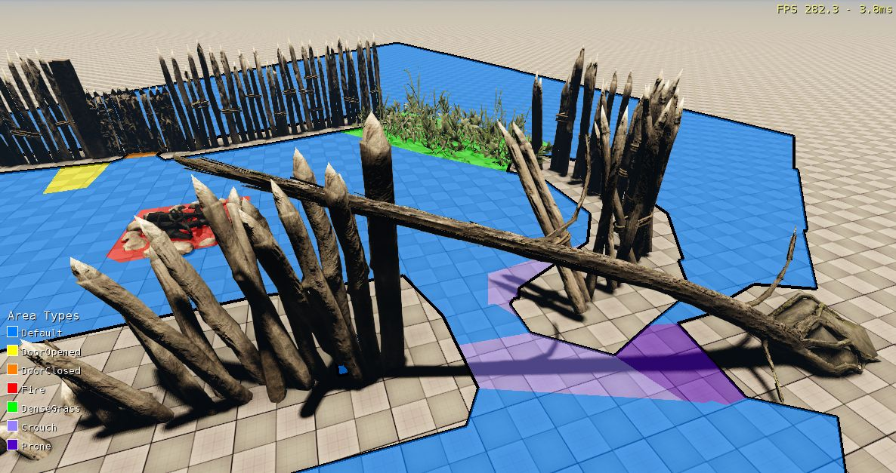
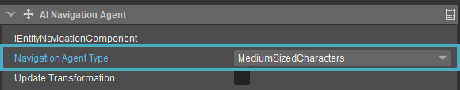

Overview
Multi-layer Navigation Meshes (MNM) can contain multiple layers of NavMeshes, each of which can be used by AI agents having different properties.
Parts of these NavMeshes can further be marked by special areas that either make it more difficult for AI agents to navigate, or that block them from doing so altogether. The properties of Navigation Agents, Area Types and more can be configured in the Scripts/AI/Navigation.xml file of your project.
The typical structure of a Navigation.xml file, with Agent Types, Area Flags and Area Types defined, is as follows:
<Navigation version="6" >
<AreaFlags>
...
</AreaFlags>
<AreaTypes>
...
</AreaTypes>
<AgentTypes>
...
</AgentTypes>
</Navigation>Attached below is a sample Navigation.xml file that you can download and modify for your projects. It must be placed in your project's Scripts/AI/ folder.
The version attribute of the Navigation tag in the first line of the Navigation.xml file must always be updated every time the file is updated. If not, inconsistencies between the saved NavMesh and the configuration data present in the Navigation.xml file may cause the Engine to crash.
Every time the Navigation.xml file is updated, users must regenerate NavMeshes in the Editor using the Game → AI → Regenerate Navigation → Regenerate All Layers option from the main menu to be able to see the updated NavMeshes.
Agent Types
In terms of navigation, AI characters can be imagined as cylinders with varying dimensions (radii, heights) and walkability properties.
With that in mind, each AI Character type must have a Navigation Agent Type assigned to it; characters can share the same Navigation Agent Type, and hence use the same NavMesh. The properties of a Navigation Agent Type are configured by the <AgentType> node:
<AgentType name="MediumSizedCharacters" voxelSize="0.125, 0.125, 0.125" radius="4" height="16" climbableHeight="3" climbableInclineGradient="1" climbableStepRatio="1" maxWaterDepth="8" /> AgentType Properties
| Attribute | Description | Default Value |
|---|---|---|
| name | A unique user-defined name that is also used as a display name. | - |
| voxelSize | The size of the generated voxels in meters; must be floating point values >= 0.025. | 0.1, 0.1, 0.1 |
| radius | The radius of the agent in voxels; must be an integer value >= 1. | 4 |
| height | The height of the agent in voxels; must be an integer value >= 1. | 18 |
| climbableHeight | The maximum climbable height in voxels (which can also be considered as the maximum slope value); must be an integer value >= 0. | 4 |
| climbableInclineGradient | The steepness of a surface to still be climbable. The higher the value, the steeper a surface the AI agent can traverse. | 1.0 |
| climbableStepRatio | The maximum allowed steepness of a surface after performing a step up/down. The higher the value, the steeper a surface the AI agent can traverse. | 0.75 |
| maxWaterDepth | The maximum walkable depth of water in voxels; must be an integer value >= 0. | 6 |
The generated Navmesh is influenced by the size and walkability properties above, as well as by the position and rotation of physical proxies in the world that are voxelized in the Navmesh generation process. However, the difference in generated slope angles does not vary more than +/- 5 degrees.
Example
<AgentTypes>
<AgentType name="MediumSizedCharacters" voxelSize="0.125, 0.125, 0.125" radius="4" height="16" climbableHeight="3" climbableInclineGradient="1" climbableStepRatio="1" maxWaterDepth="8" />
<AgentType name="LargeSizedCharacters" voxelSize="0.15, 0.15, 0.15" radius="6" height="20" climbableHeight="6" maxWaterDepth="10" />
</AgentTypes> |  |
| NavMeshes generated for the 'MediumSizedCharacters' Agent Type. | NavMeshes generated for the 'LargeSizedCharacters' Agent Type. Note that the bottom center passage cannot be traversed by 'LargeSizedCharacters' agents. |
Triangle Annotations
Every triangle in a NavMesh is annotated with an Area Type and an Area Flag, both of which are used in NavMesh queries like path-finding, raycasts and others to filter out forbidden triangles and to compute traversal costs. These annotations can also be changed during run-time.
Area Flags
Area Flags can be used for checking the accessibility of NavMesh triangles, and a combination of Flags can be set on each triangle.
Area Flags are defined by <Flag> nodes that have the following attributes:
| Attribute | Description |
|---|---|
| id | A unique identifier for the Area Flag; must be an integer value between 0 and 25. Values 0 and 1 are reserved for default Flags created by the system. |
| name | The name of the Area Flag; should be unique as well. |
| color | The display color of the triangles when the ai_MNMDebugDrawFlag CVar is used. |
<Flag id="4" name="Forbidden" color="64,0,0,127"/>The Navigation system automatically creates the following default Flags:
- 'Walkable' (id = 0) - This Flag is used by the default Area Type. All NavMesh triangles that aren't part of any specially marked area have this Flag set.
- 'Inaccessible' (id = 1) - This Flag that is set on all triangles that aren't connected to a Seed Point in a Navigation Area.
Area Types
Area Types provide a way of marking special areas that may have different costs of traversal in NavMeshes. Area Types are configured by <AreaType> nodes, and should contain a list of initial Flags that are set on the triangles of a NavMesh when it is generated.
<AreaType> nodes have the following attributes:
| Attribute | Description |
|---|---|
| id | A unique area identifier; must be an integer value between 0 and 64. Value 0 is reserved for the default Area Type created by the system. |
| name | A unique name of the area. |
| color | The display color of NavMesh triangles that have this Area Type set. |
<AreaType id="2" name="DoorClosed" color="255,128,0,127">
<Flag>Walkable</Flag>
<Flag>Door</Flag>
<Flag>Forbidden</Flag>
</AreaType>The Navigation system automatically creates a default Area Type (id = 0) which is applied to all triangles that aren't specially marked.
Example
The following is an example of how Area Types and Flags can be configured:
<AreaFlags>
<Flag id="2" name="Fire" color="255,0,0,127"/>
<Flag id="3" name="Door" color="255,255,0,127"/>
<Flag id="4" name="Forbidden" color="64,0,0,127"/>
</AreaFlags>
<AreaTypes defaultColor="0,127,255,127">
<AreaType id="1" name="DoorOpened" color="255,255,0,127">
<Flag>Walkable</Flag>
<Flag>Door</Flag>
</AreaType>
<AreaType id="2" name="DoorClosed" color="255,128,0,127">
<Flag>Walkable</Flag>
<Flag>Door</Flag>
<Flag>Forbidden</Flag>
</AreaType>
<AreaType id="3" name="Fire" color="255,0,0,127">
<Flag>Walkable</Flag>
<Flag>Fire</Flag>
</AreaType>
<AreaType id="4" name="DenseGrass" color="0,255,0,127">
<Flag>Walkable</Flag>
</AreaType>
</AreaTypes>
NavMesh marked with special Area Types
Lower Height Areas
Typically, a NavMesh is generated only where the clearance is not less than the AI agent's height.
In cases when the agent can change its stance however, it is also desirable to generate a NavMesh where the agent can walk in a crouched stance. This can be achieved by adding a Lower Height Area to the agent's configuration using the <LowerHeightArea> child node.
NavMeshes with Lower Height Areas can be also shared by AI characters with different heights; these AI characters can use the same Agent Type, filtering out triangles that are inaccessible to them. Moreover, multiple Lower Height Areas with different heights can be specified for a single Agent Type.
The attributes of a <LowerHeightArea> node are as follows:
| Attribute | Description |
|---|---|
| height | Minimum clearance height in voxels; must be an integer value between 1 and the height of the AI AgentType. |
| areaType | Name of the Area Type that will be applied to the triangles of a Lower Height Area. |
| minAreaSize | Minimum size of the Lower Height Area in voxels; must be an integer value. This property can be used for removing smaller areas that could fragment the NavMesh; only areas that aren't on a tile's boundary, and that aren't connecting other NavMesh regions can be removed. |
<LowerHeightArea height="8" areaType="Crouch" minAreaSize="200"/>Example
If we take the level shown in the NavMesh marked with special Area Types image above, and block the bottom entrance with a fallen tree, no NavMesh will be generated there because the space between the terrain and the tree isn't large enough for an AI character to pass through.

Fallen tree
Since it shouldn't be a problem for a character to crouch or lay prone under it, we can add Lower Height Areas to generate NavMeshes in such places. The same NavMesh could then be used by smaller agents as well (but of the same radius).
<AgentType name="MediumSizedCharacters" voxelSize="0.125, 0.125, 0.125" radius="4" height="16" climbableHeight="3" climbableInclineGradient="1" climbableStepRatio="1" maxWaterDepth="8">
<LowerHeightArea height="8" areaType="Crouch" minAreaSize="200"/>
<LowerHeightArea height="4" areaType="Prone" minAreaSize="200"/>
</AgentType> |  |
| NavMesh generated with Crouch areas (light violet) only. | NavMesh with Crouch and Prone (dark violet) areas. |
Voxels and Units
When a NavMesh is generated, the Navigation Areas are split into smaller volumes called tiles.
These tiles have a fixed size of 8 m x 8 m x 8 m. Moreover, the tiles must consist of an integer number of voxels (e.g. 0.1 m x 0.1 m x 0.1 m is a valid voxel size); if not, the voxel size will be internally adjusted to the closest valid value (e.g. 0.101 m x 0.101 m x 0.101 m would be adjusted to 0.125 m x 0.125 m x 0.125 m).
The smaller the voxel size, the more accurate (and expensive) the generated NavMesh will be. The minimum voxel size is 0.025 m x 0.025 m x 0.025 m (a smaller size will cause the NavMesh generation to fail).
Smart Object User Classes
See Off-mesh Navigation.
Assignment of a Navigation Agent Type to an AI Character
To configure the Agent Type of an AI Character:
- Add an AI → AI Navigation Agent Component to the character using the Add Component button in the Properties tool.
- Select the character's Agent Type using the Navigation Agent Type dropdown.
An Agent Type must first be defined in the Navigation.xml config file in order for it to be listed in the Navigation Agent Type dropdown.

Navigation Agent Type